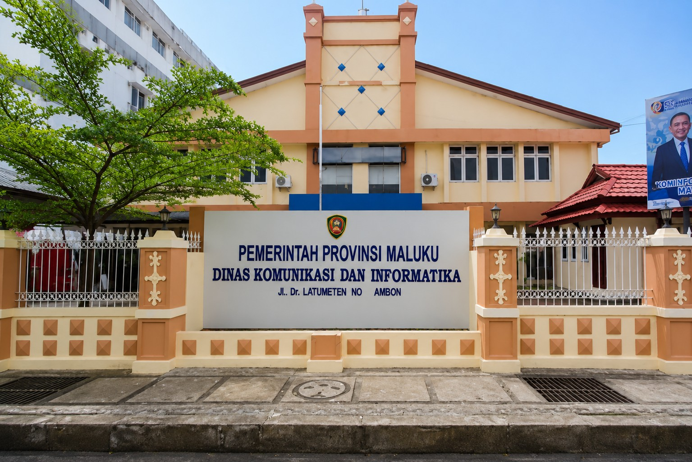
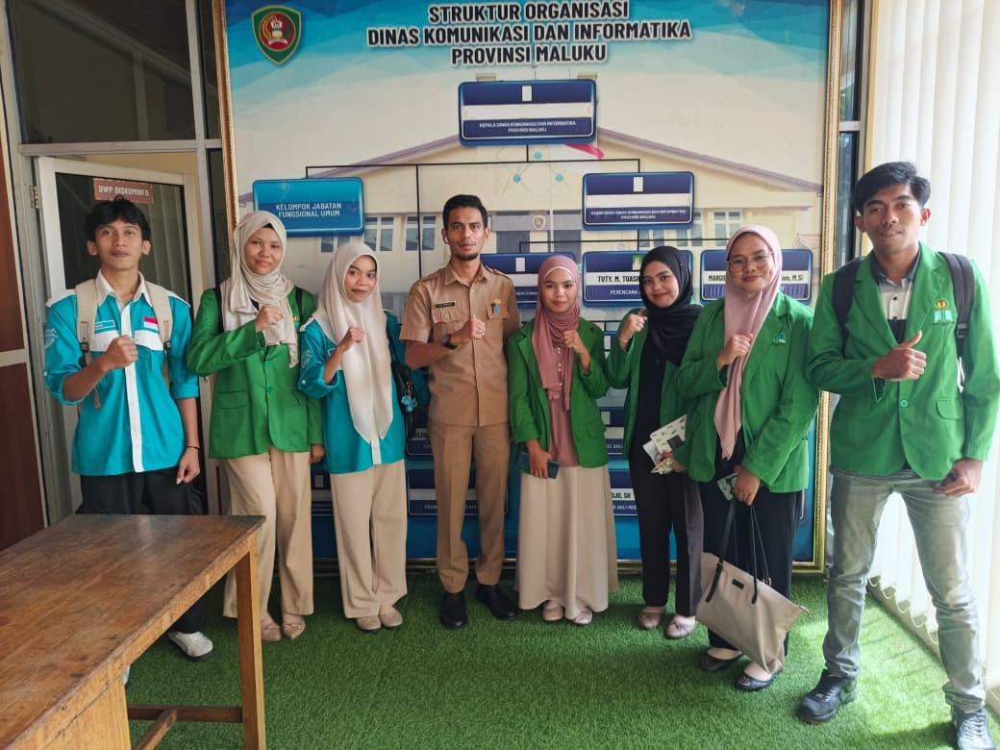
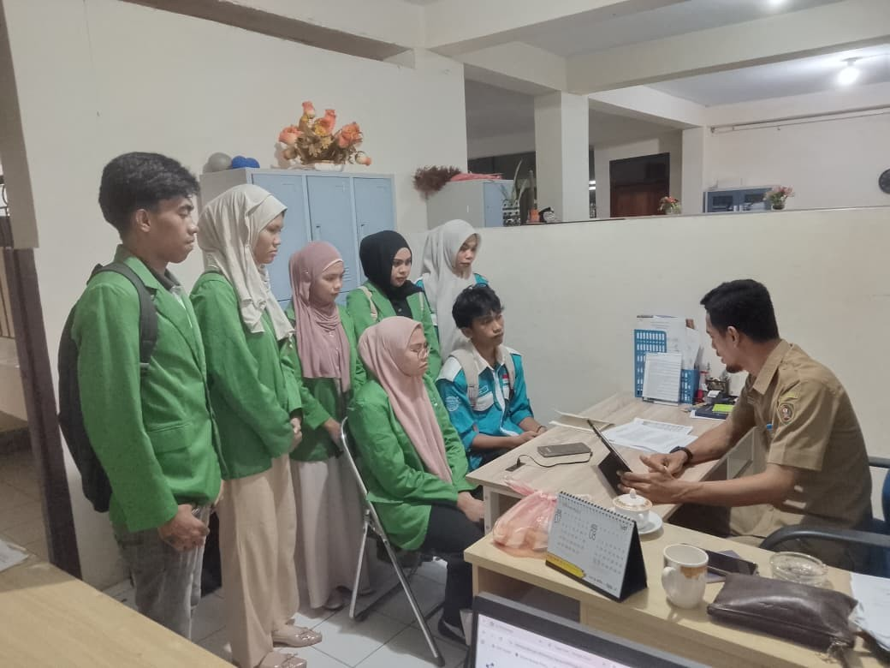
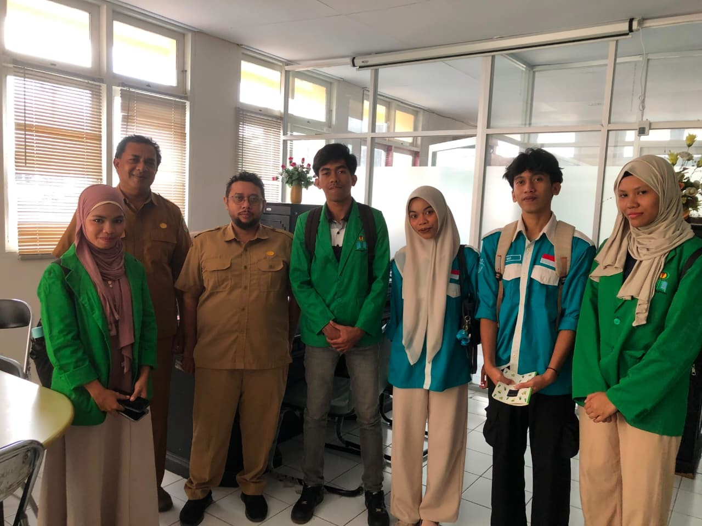

Mewujudkan Maluku yang Terhubung, Transparan, dan Melayani Digital
Dinas Komunikasi dan Informatika Provinsi Maluku mengelola komunikasi publik, statistik, persandian, dan layanan informatika untuk mendukung tata kelola pemerintahan yang baik di seluruh kepulauan Maluku.

Tugas dan Fungsi Utama
Diskominfo Provinsi Maluku menyelenggarakan urusan pemerintahan di bidang komunikasi dan informatika, statistik, serta persandian untuk mendukung keterbukaan informasi publik dan transformasi digital daerah.
Komunikasi Publik
Mengelola informasi dan komunikasi publik Pemerintah Provinsi Maluku kepada masyarakat melalui berbagai kanal media.
Aplikasi & Informatika
Mengembangkan dan mengelola sistem informasi serta infrastruktur teknologi informasi pemerintahan daerah.
Statistik & Persandian
Menyediakan data statistik sektoral serta menjamin keamanan informasi melalui persandian pemerintahan.
Dokumentasi Kegiatan

Foto observasi Kominfo

Foto observasi Kominfo

Foto observasi Kominfo
Butuh Layanan atau Informasi?
Akses layanan publik dan sistem informasi Diskominfo Provinsi Maluku dengan mudah dan cepat.